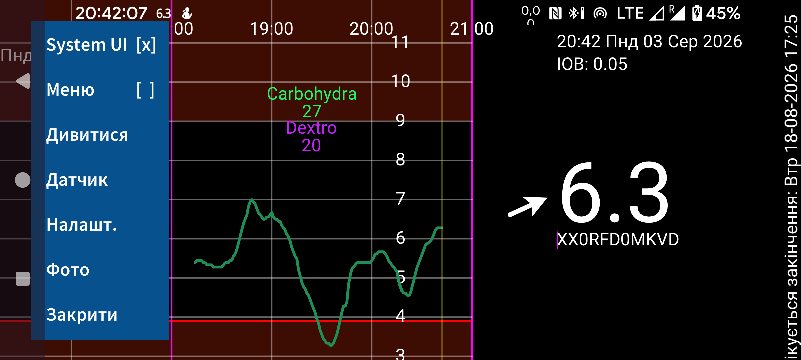
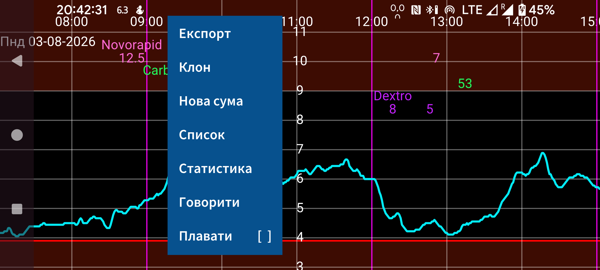
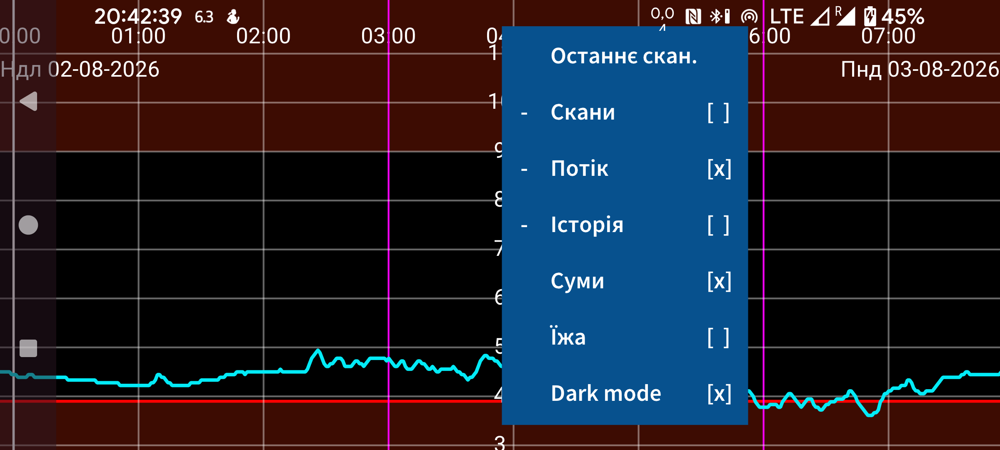
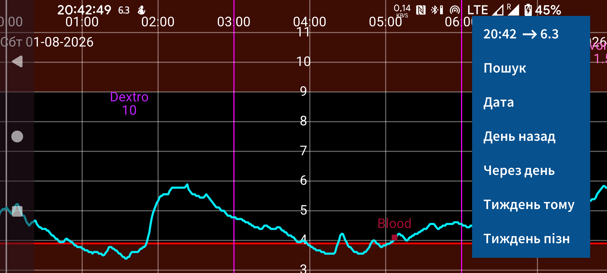

Juggluco — програма, яка допомагає людям із діабетом контролювати рівень глюкози крові. Вона може сканувати датчики Freestyle Libre (0 і 2) через NFC та отримувати через Bluetooth значення глюкози від датчиків Freestyle Libre 2, 2+, 3, 3+, Sibionics GS1Sb і GS3, Dexcom G7/ONE+, Accu-Chek SmartGuide, CareSens Air і Linx/Lumiflex/Aidex X .
Під час першого запуску програми можна відсканувати датчик Freestyle Libre 2 , піднісши його до зони NFC смартфона. Після цього Juggluco спробує встановити Bluetooth-з’єднання з датчиком Freestyle Libre 2 і щохвилини отримуватиме значення глюкози без подальшого сканування. Щоб підхопити датчик FreeStyle Libre 3 або 3+ , активований за допомогою програми Abbott Libre 3, потрібно вказати дані облікового запису Libreview, використані для активації датчика, у Налаштування → Обмін даними → Libreview, натиснути «Отримати ідентифікатор облікового запису» і дочекатися отримання ідентифікатора облікового запису перед скануванням. Неможливо підхопити датчик Libre 3, запущений зчитувачем FreeStyle Libre 3 або американською програмою Libre як для Libre 2, так і для Libre 3. Juggluco також може активувати всі згадані датчики, за можливим винятком Accu-Chek SmartGuide.
Щоб під’єднати датчик Sibionics GS1Sb, Dexcom G7/ONE+, Accu-Chek SmartGuide, CareSens Air або Linx/Lumiflex/Aidex X , потрібно відсканувати його матричний код через ліве меню → Фото. Датчики Dexcom G7/ONE+ сполучаються через Bluetooth. На більшості телефонів потрібно підтвердити запит на сполучення, причому зробити це слід швидко — інакше доведеться чекати ще 5 хвилин. Поки очікуєте, не вимикайте екран. На Samsung Galaxy Watch 4 і 7 підтверджувати сполучення не потрібно. Використані (прострочені) датчики Dexcom G7/ONE+ ще довго залишаються доступними через Bluetooth після припинення запису значень глюкози. Щоб Juggluco не намагався сполучитися з неправильним датчиком, тримайте старі датчики поза радіусом дії Bluetooth (наприклад, щонайменше за 15 метрів або в мікрохвильовій печі як у клітці Фарадея), особливо коли старий датчик має такий самий PIN-код, як новий. Вимкніть, примусово зупиніть або видаліть програми й пристрої, які раніше з’єднувалися з датчиком. Під час сполучення датчиків Accu-Chek SmartGuide потрібно ввести PIN-код.
Щоб запустити датчик Sibionics GS3 у Juggluco, відскануйте матричний код на упаковці або сам датчик через NFC. Після цього з’явиться екран, де потрібно ввести ідентифікатор. Якщо датчик уже використовувався з програмою Sibionics GS3 або ви хочете мати змогу користуватися нею надалі, введіть адресу електронної пошти й пароль, використані в програмі Sibionics GS3, та отримайте ідентифікатор облікового запису із сервера. Для нового датчика, який використовуватиметься лише з Juggluco, можна ввести довільне число.
Докладнішу інформацію про під’єднання датчиків див. на https://www.juggluco.nl/Juggluco/sensors .
Програма містить чотири меню; торкніться порожньої ділянки екрана, щоб відкрити меню. Дотик до лівої чверті екрана відкриває ліве меню; до лівої половини центральної ділянки — друге; до правої половини центральної ділянки — третє; до правої чверті — четверте меню.
Меню 4: Навігація (праворуч)
15:10 ↗ 93
Пошук
Дата
День назад
Через день
Тиждень тому
Тиждень пізн
Проводячи пальцем ліворуч або праворуч по екрану, можна переміщувати криву в часі. Для цього також можна використовувати меню навігації праворуч. Натисніть Дата , щоб вибрати дату, або Пошук , щоб знайти значення глюкози та введені числа. Перший пункт правого меню показує поточний час; вибравши його, ви переходите до правого краю графіка, тобто до поточного моменту.
Якщо в налаштуваннях увімкнено Ручне масштабування глюкози , рух угору або вниз у верхній частині екрана змінює максимум графіка, а в нижній частині — мінімум. Якщо в налаштуваннях увімкнено Ручне масштабування часу , можна збільшувати або зменшувати проміжок часу на екрані, змінюючи відстань між двома пальцями.
Меню 3: Відображення
Останнє скан.
Сканування [x]
Потік [x]
Історія [x]
Значення [x]
Їжа [ ]
Темний режим [x]
У правій частині середнього меню містяться параметри відображення. Щоб переглянути останнє сканування, торкніться першого пункту. Позначка після Скани означає, що точки сканувань показуються на графіку. Сканування — це поточне значення глюкози, отримане під час сканування датчика Libre 0 або 2 через NFC. Сканування також передає з датчика на телефон історичні значення за останні 8 годин із кроком 15 хвилин. Їх відображенням можна керувати через Історія. Датчики Libre 3 передають історичні значення через Bluetooth із кроком 5 хвилин. «Потік» означає значення глюкози, які датчики FreeStyle Libre 2 і 3 щохвилини надсилають цій програмі через Bluetooth.
Можна вводити різні числа з довільними мітками, щоб записувати інсулін, вуглеводи та фізичну активність. Вони показуються на фіксованій висоті графіка глюкози у вказані дату й час. Торкання точки на графіку або введеного числа показує інформацію про відповідний елемент. Щоб відредагувати введене число, торкніться й утримуйте його. Редагувати також можна через список значень у лівій частині середнього меню — торкнувшись відповідного запису. Суми визначає, чи показувати введені числа. У Налашт.можна вказати, які мітки використовувати для цих чисел. Над числом показується відповідна мітка.
Меню 2: Ліва частина середнього
Експорт
Клон
Нова сума
Список
Статистика
Говорити
Плавати [ ]
Щоб ввести число, натисніть Нова сума в лівій частині середнього меню. Експорт зберігає дані у файлі формату .tsv (значення, розділені табуляціями). Клон дає змогу передавати дані через IP/TCP до цієї програми на іншому пристрої, щоб там відображалася та сама інформація. Список показує введені числа. Коли Juggluco отримає достатньо значень глюкози через Bluetooth, переглянути статистичні дані можна через Статистика. Вона показує частку вимірювань у заданих діапазонах глюкози, індикатор керування глюкозою (оцінку HbA1c), варіабельність глюкози та підсумковий графік зі значеннями глюкози, нижче яких у кожну хвилину доби лежать 0%, 5%, 25%, 50%, 75%, 95% і 100% вимірювань. У розділі Говорити можна налаштувати, щоб Juggluco промовляла нові значення глюкози, торкнуті елементи графіка або повідомлення. Пункт «Плаваюче» вмикає Плав. глюкоза— значення глюкози, яке показується поверх інших програм. У налаштуваннях можна змінити його колір і розмір.
Меню 1: Ліворуч
System UI [ ]
Меню [ ]
Дивитися
Датчик
Налашт.
Фото
Закрити
У лівому менюможна знайти Налашт., де можна вибрати одиниці глюкози — ммоль/л або мг/дл, указати мітки, налаштувати сигнали глюкози та нагадування про ліки , а також діапазони відображення. Пункт «Системний інтерфейс» визначає, чи показувати елементи керування Android і рядок стану. У розділі Дивитися можна налаштувати передавання даних Juggluco на різні розумні годинники. У розділі Датчикможна перевірити стан з’єднання з датчиком. Натисніть Меню , щоб одночасно показати всі чотири меню в макеті, який може озвучувати TalkBack. Пункт «Закрити» завершує роботу Juggluco.